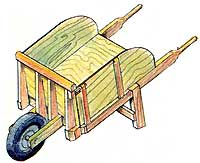
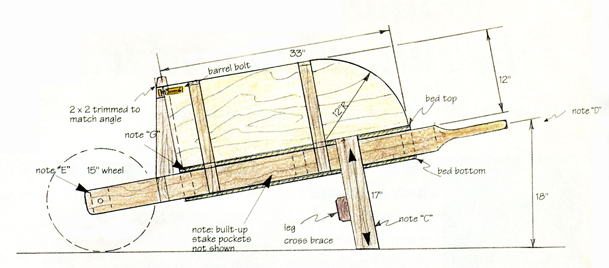
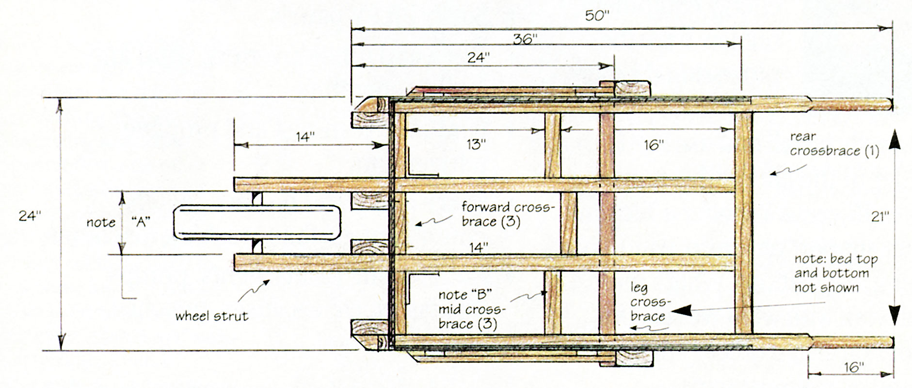
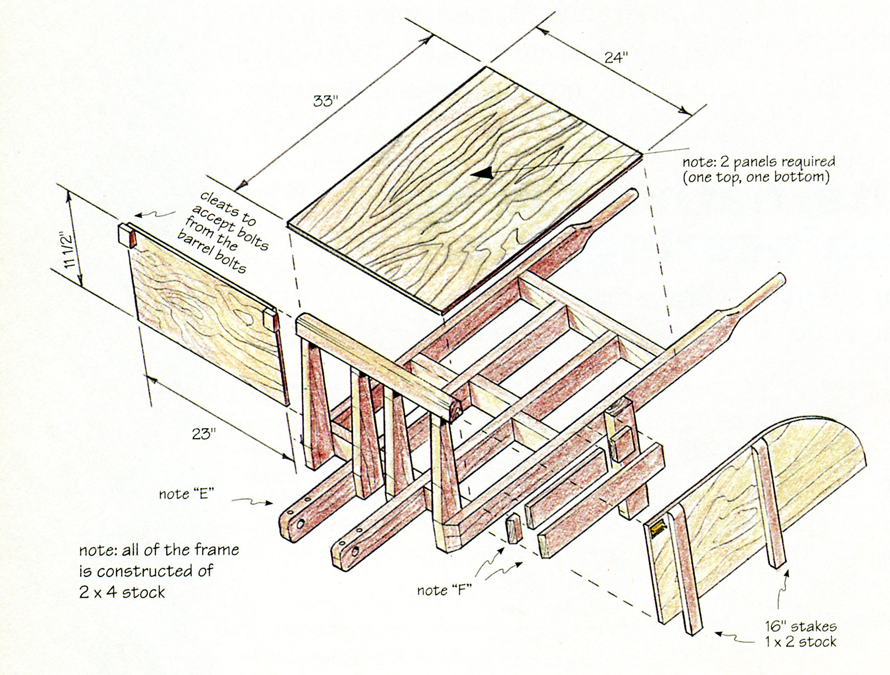

If you, like me, get tired of making repeated trips to the tool or potting shed, and carrying stuff by the armloads: stop! Maybe it's time to build yourself an old-fashioned wheel barrow. This backsaver can be built in a weekend for around $50, and that includes buying the wheel.
The wheel, with built-in bearings, can be bought at any decent hardware store for around $25. But if your are feeling particularly neolithic, you can build your own. Or maybe you can scavenge one from a piece of broken or unused equipment.
This model has "convertible" stake bed sides: why lug that extra weight around if you don't need to? You can also tote wider things with this design without having to balance them on the top. I like options.
I designed this with ease of construction in mind. That's why everything is "squared off." You don't have to calculate any angles (almost all of the cuts are 90 degrees). Likewise, all the lumber is "off-the-shelf" sizes. Use 1/4" x 3" lag bolts with washers to assemble all the 2" x 4" structures (two lag bolts at each union; use at least three lag bolts to attach the legs to the sides; pre-drill). Use waterproof glue and 1 1/4" drywall screws to attach the plywood to the frame.
Use a sealing-type primer and paint. Be sure all the edges of the plywood are sealed. You may be tempted to omit the bottom bed panel. Don't. The sandwiched structure is tremendously strong and will withstand both side-loading and wracking stresses. Without the bottom panel, you would need diagonal cross-bracing which involves complicated mortise joints and angle cuts.
If you are going to be carrying really abrasive objects (such as rocks or your mother-in-law), you might consider lining the bed with sheets of tin. As always, use proper lifting techniques and wear a back support. Don't overload: two trips are better than one. Throwing your back out needlessly isn't a time-saver.
With a little care and maintenance, this stout, versatile wheel barrow will give you years of service.
Note A: This dimension will be determined by the width of the axle of the wheel you use.
Note B: Angle bracket 1/2" x 3" x 3" attaches to wheel struts and to front cross brace.
Note C: You may vary the length of the leg to customize the handle height to a comfortable level.
Note D: You may vary the diameter of the handle to fit your hand. The average diameter is 1 1/4" to 1 1/2". Don't make it too small and weaken the structure.
Note E: Drill a 1/4 hole on both sides of the axle as shown. Insert a 1/4" bolt with washers and nuts. This will prevent the struts from splitting.
Note F: "Built up" stake pocket, 1" x 4" stock. Attach stakes to the side panels. Position the side panels on the wheel barrow, then build the pockets around the stakes. This way you are sure everything fits. Give at least 1/8 " clearance. Also have the support legs lag-bolted in place.
Note G: Leave a small gap so that water can drain.
"James Lewis, get away from that wheelbarrow.
You know you don't know nothin' about machinery"
- Brother Dave Garner
One sheet of 4' x 8' x 1/4" plywood
Five 2" x 4" x 8' lengths of fir
One length of 1" x 2" x 6' fir stock (stakes)
One length of 1" x 4" x 8' fir stock (stake pockets)
Two 90-degree galvanized angle brackets Forty-five 1/4" x 3" galvanized lag bolts
Forty-five 1/4" galvanized washers
Four 1/4" x 3" galvanized bolts with washers and nuts
One tube of waterproof carpenter's glue
1 lb number 8 x 1 1/4" drywall screws
1 gallon of primer
1 gallon of paint
1 wheel
2 3-inch barrel bolts
|
 |
 |
 |
|
 |
|
|